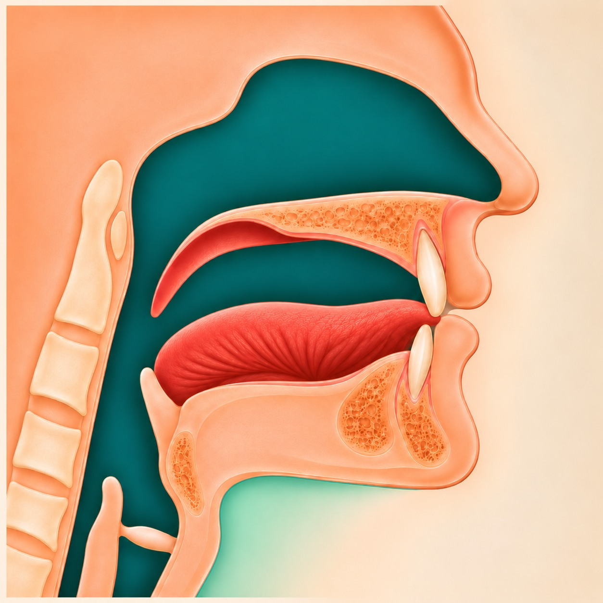
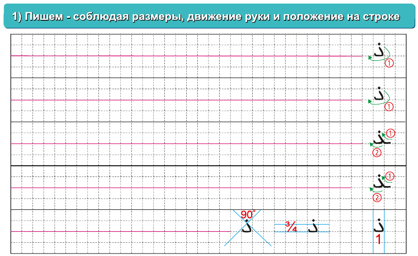

Открываем страницы 61–64 «Азбуки Корана». Показываем упражнения из книги и ведём занятие шаг за шагом.
«Азбука Корана», страницы 61–64. Махрадж и названия свойств сверены с «Таджвидом 1».
ШАГ 1 · МАХРАДЖ
Где образуется звук Зал?

Зал: кончик языка у края верхних передних зубов; немного виден между зубами.
1 · Кончик языка — «тарафуль-лисан»
2 · Верхняя поверхность кончика — «захруль-лисан»
Кончик языка и его верхняя поверхность слегка касаются края верхних передних резцов. Кончик совсем немного выступает между зубами, не прижимаясь к нижним. Учитель медленно показывает положение, ученик повторяет.
«Азбука Корана», страницы 61–64. Махрадж и названия свойств сверены с «Таджвидом 1».
ШАГ 2 · СВОЙСТВА
Свойства буквы Зал
ذЗалЛясавия
Аль-ДжахрЗвонкость
Ар-РахаваПродолжительность звука
Аль-ИстифальНизкое положение языка
Аль-ИнфитахОткрытость
Аль-ИсматУдержанность
Пока отмечаем только названия свойств. Подробно изучим их в отдельных разделах.
«Азбука Корана», страницы 61–64. Махрадж и названия свойств сверены с «Таджвидом 1».
ШАГ 3 · СТРАНИЦА 61
Упражнения 1–2: пишем и читаем

Первую строку пишем вместе. Остальные ученик дописывает сам; проверяем положение буквы на строке и одну точку сверху.